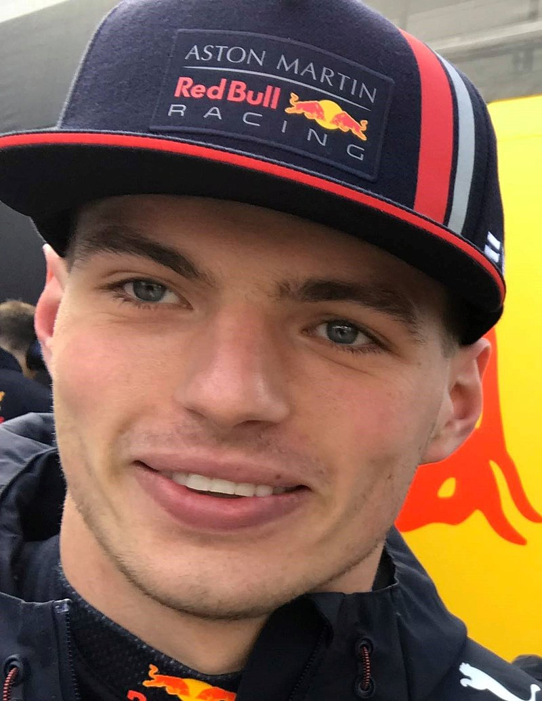
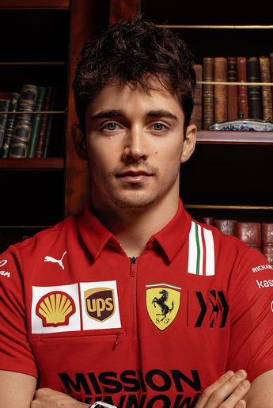

Campeonato Mundial de Fórmula 1 de 2022
O Campeonato Mundial de Fórmula 1 da FIA de 2022 foi a 73ª temporada do Campeonato Mundial de Fórmula 1, que é reconhecido pela Federação Internacional de Automobilismo (FIA), o órgão regulador do automobilismo internacional, como a mais alta categoria de competição para carros de corrida monopostos. O campeonato foi disputado em 22 etapas, tendo iniciado no Barém, em 20 de março, e terminado nos Emirados Árabes Unidos, em 20 de novembro. Nesta temporada ocorreu a estreia do Grande Prêmio de Miami, realizado no Autódromo Internacional de Miami. Equipes e pilotos competiram para serem campeões mundiais de construtores e de pilotos, respectivamente.
Na temporada de 2022 foi introduzido mudanças significativas nos regulamentos técnicos do esporte. Originalmente, essas mudanças deveriam ser introduzidas em 2021, mas foram adiadas para 2022 em resposta ao impacto da pandemia de COVID-19.
Em 9 de outubro de 2022, Max Verstappen venceu o Grande Prêmio do Japão em Suzuka, sagrando-se bicampeão mundial de Fórmula 1.
Pilotos no Pódio
- Max Verstappen
Max Emilian Verstappen (Hasselt, 30 de setembro de 1997) é um automobilista neerlandês. Ele é piloto de Fórmula 1 desde 2015, tendo feito sua estreia pela equipe Toro Rosso. Foi duas vezes campeão da Fórmula 1 em 2021 e 2022, e terminou em terceiro lugar em 2019 e 2020 com a Red Bull Racing, equipe pela qual corre desde 2016.

- Charles Leclerc
Charles Marc Hervé Perceval Leclerc, mais conhecido como Charles Leclerc, (Monte Carlo, 16 de outubro de 1997) é um piloto de automóveis monegasco que compete na Fórmula 1 pela equipe Ferrari.
Integrou a Ferrari Driver Academy desde 2016, e ganhou o campeonato da GP3 Series em 2016 e o Campeonato de Fórmula 2 da FIA em 2017, pela ART Grand Prix.

- Sergio Pérez
Sergio Michel Pérez Mendoza (Guadalajara, 26 de janeiro de 1990) é um automobilista mexicano que atua na Formula 1 e atualmente faz parte da grade de pilotos da equipe Red Bull Racing.

Equipes
- Alfa Romeo F1 Team Orlen
- Scuderia AlphaTauri
- BWT Alpine F1 Team
- Aston Martin Aramco Cognizant F1 Team
- Scuderia Ferrari
- Haas F1 Team
- McLaren F1 Team
- Mercedes-AMG Petronas F1 Team
- Oracle Red Bull Racing
- Williams Racing
Classificação Pilotos e Equipes
|
Grande Premio |
Vencedor |
Equipe |
| 1 |
Grande Prêmio do Barém |
Charles Leclerc |
Ferrari |
| 2 |
Grande Prêmio da Arábia Saudita |
Max Verstappen |
Red Bull Racing-RBPT |
| 3 |
Grande Prêmio da Austrália |
Charles Leclerc |
Ferrari |
| 4 |
Grande Prêmio da Emília-Romanha |
Max Verstappen |
Red Bull Racing-RBPT |
| 5 |
Grande Prêmio de Miami |
Max Verstappen |
Red Bull Racing-RBPT |
| 6 |
Grande Prêmio da Espanha |
Max Verstappen |
Red Bull Racing-RBPT |
| 7 |
Grande Prêmio de Mônaco |
Sergio Perez |
Red Bull Racing-RBPT |
| 8 |
Grande Prêmio do Azerbaijão |
Max Verstappen |
Red Bull Racing-RBPT |
| 9 |
Grande Prêmio do Canadá |
Max Verstappen |
Red Bull Racing-RBPT |
| 10 |
Grande Prêmio da Grã-Bretanha |
Carlos Sainz Jr. |
Ferrari |
| 11 |
Grande Prêmio da Áustria |
Charles Leclerc |
Ferrari |
| 12 |
Grande Prêmio da França |
Max Verstappen |
Red Bull Racing-RBPT |
| 13 |
Grande Prêmio da Hungria |
Max Verstappen |
Red Bull Racing-RBPT |
| 14 |
Grande Prêmio da Bélgica |
Max Verstappen |
Red Bull Racing-RBPT |
| 15 |
Grande Prêmio dos Países Baixos |
Max Verstappen |
Red Bull Racing-RBPT |
| 16 |
Grande Prêmio da Itália |
Max Verstappen |
Red Bull Racing-RBPT |
| 17 |
Grande Prêmio de Singapura |
Sergio Perez |
Red Bull Racing-RBPT |
| 18 |
Grande Prêmio do Japão |
Max Verstappen |
Red Bull Racing-RBPT |
| 19 |
Grande Prêmio dos Estados Unidos |
Max Verstappen |
Red Bull Racing-RBPT |
| 20 |
Grande Prêmio da Cidade do México |
Max Verstappen |
Red Bull Racing-RBPT |
| 21 |
Grande Prêmio de São Paulo |
George Russell |
Mercedes |
| 22 |
Grande Prêmio de Abu Dhabi |
Max Verstappen |
Red Bull Racing-RBPT |
Bibliografia
-
Wikipedia